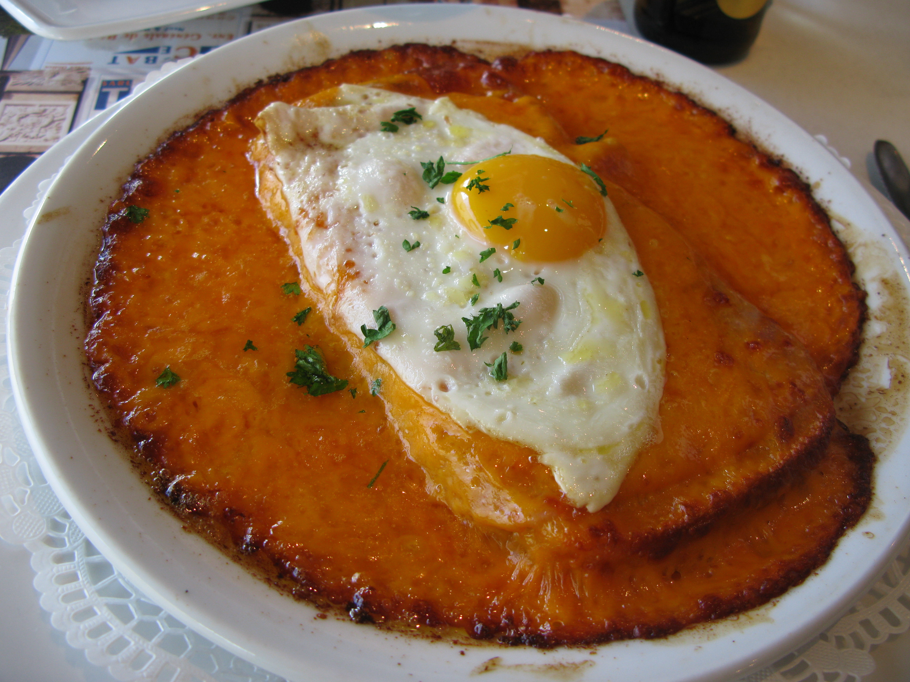

CityLoop Quest Lille


La gastronomie lilloise est généreuse, franche et profondément liée au Nord. Elle porte l’influence flamande, la culture de la bière, le goût des plats mijotés et l’importance des repas partagés. Ici, on ne mange pas seulement pour goûter : on mange pour se réchauffer, pour se retrouver, pour tenir une conversation et pour prolonger un moment. Cette cuisine a du caractère, parfois de la puissance, mais aussi beaucoup de convivialité.
Parmi les spécialités les plus connues, le welsh tient une place de choix. Inspiré d’une tradition britannique réinterprétée dans le Nord, il associe pain, jambon, bière et cheddar fondu, souvent servi avec un œuf et des frites. C’est un plat dense, presque spectaculaire, parfait pour comprendre l’esprit local : simple dans ses ingrédients, très direct dans son effet, et idéal après une longue promenade.

La carbonnade flamande raconte un autre versant de la cuisine régionale. Ce ragoût de bœuf mijoté à la bière, légèrement sucré par le pain d’épices ou la cassonade selon les recettes, exprime le lien entre cuisine domestique et culture brassicole. À Lille, la bière n’est pas seulement une boisson : elle entre dans les sauces, accompagne les plats et structure de nombreux moments de sociabilité.

Impossible aussi d’ignorer les moules-frites de la Braderie, les gaufres fourrées à la vergeoise, les fromages puissants comme le maroilles, les frites servies en cornet, les bières artisanales et les pâtisseries du centre. Certaines adresses historiques, certaines brasseries et les marchés comme Wazemmes permettent de découvrir cette diversité sans la réduire à un folklore de carte postale.

Pendant votre séjour CLQ, choisissez au moins une pause gourmande vraiment locale. Observez les menus, les ardoises, les odeurs de cuisson, les files d’attente et les habitudes des habitués. À Lille, la gastronomie fait partie de la visite : elle prolonge l’histoire flamande, raconte la vie ouvrière, célèbre la fête populaire et donne au parcours un goût très concret.
Ces spécialités gagnent à être abordées comme des morceaux d’histoire comestible. Elles parlent de climat, de travail, de brassage culturel, de proximité avec la Flandre et de la place du café ou de l’estaminet dans la sociabilité locale. Prenez le temps de demander l’origine d’un plat, de comparer les recettes, de regarder comment il est servi. À Lille, un repas peut devenir une petite enquête sur le Nord. La cuisine locale dit beaucoup du caractère lillois parce qu’elle assume la générosité. Les plats sont souvent francs, nourrissants, parfois puissants, mais rarement prétentieux. Ils appartiennent à une culture où l’on prend le temps de partager une table, de parler de bière, de comparer les frites, de défendre une adresse ou une recette familiale. Le welsh, la carbonnade, les gaufres fourrées ou les moules-frites de la Braderie ne se comprennent pas seulement par leurs ingrédients ; ils racontent un rapport au climat, à la convivialité et à la tradition flamande. Même lorsqu’ils sont servis dans des adresses très actuelles, ils gardent une mémoire populaire. Le visiteur peut donc les aborder comme une autre forme de patrimoine : un patrimoine qui ne se regarde pas depuis le trottoir, mais qui se goûte, se partage et se discute à table. Les boissons participent aussi à cette identité. La bière accompagne de nombreux plats, mais elle sert également de marqueur culturel : blonde, ambrée, artisanale, locale ou flamande, elle rappelle les liens entre Lille et les territoires voisins. Même sans alcool, l’idée importante demeure celle de la table partagée, du goût franc et de la conversation qui prolonge le repas. Pour un visiteur, le meilleur conseil est de ne pas chercher seulement le plat le plus célèbre, mais l’adresse où il prend sens : estaminet, brasserie, marché ou table familiale. Le contexte donne souvent autant de goût que la recette elle-même.